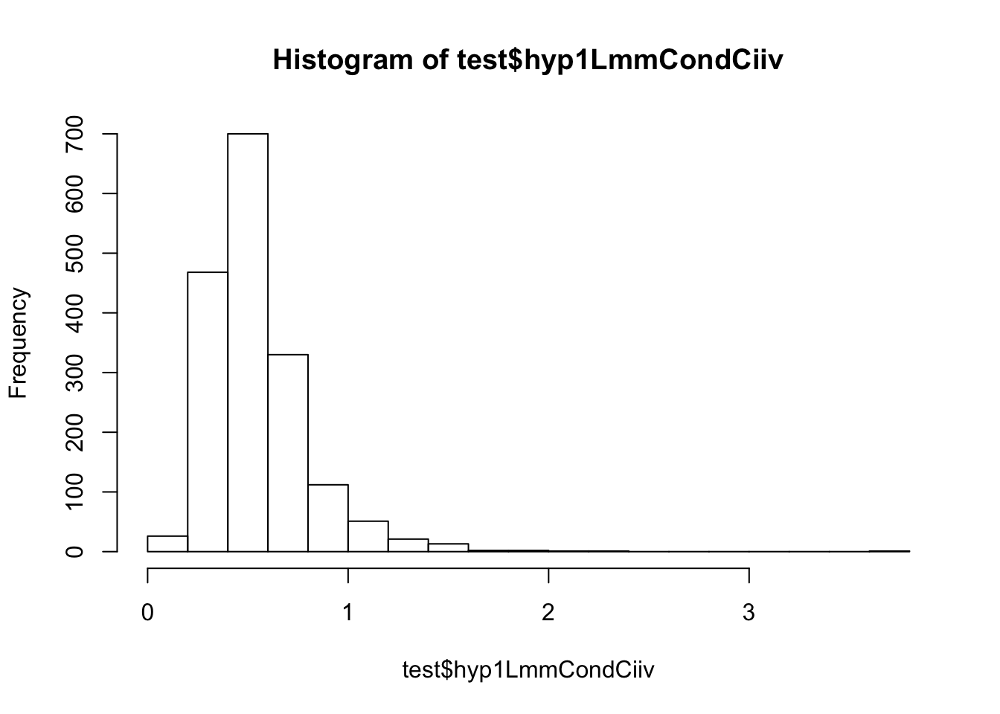

Last updated: 2020-07-08
Checks: 6 1
Knit directory: dissertation/
This reproducible R Markdown analysis was created with workflowr (version 1.6.0). The Checks tab describes the reproducibility checks that were applied when the results were created. The Past versions tab lists the development history.
Great! Since the R Markdown file has been committed to the Git repository, you know the exact version of the code that produced these results.
Great job! The global environment was empty. Objects defined in the global environment can affect the analysis in your R Markdown file in unknown ways. For reproduciblity it’s best to always run the code in an empty environment.
The command set.seed(20200414) was run prior to running the code in the R Markdown file. Setting a seed ensures that any results that rely on randomness, e.g. subsampling or permutations, are reproducible.
Great job! Recording the operating system, R version, and package versions is critical for reproducibility.
Nice! There were no cached chunks for this analysis, so you can be confident that you successfully produced the results during this run.
Using absolute paths to the files within your workflowr project makes it difficult for you and others to run your code on a different machine. Change the absolute path(s) below to the suggested relative path(s) to make your code more reproducible.
| absolute | relative |
|---|---|
| /Users/Santi/Desktop/rProjects/dissertation/analysis/big5Dat.csv | analysis/big5Dat.csv |
Great! You are using Git for version control. Tracking code development and connecting the code version to the results is critical for reproducibility. The version displayed above was the version of the Git repository at the time these results were generated.
Note that you need to be careful to ensure that all relevant files for the analysis have been committed to Git prior to generating the results (you can use wflow_publish or wflow_git_commit). workflowr only checks the R Markdown file, but you know if there are other scripts or data files that it depends on. Below is the status of the Git repository when the results were generated:
Ignored files:
Ignored: .DS_Store
Ignored: .Rhistory
Ignored: .Rproj.user/
Ignored: analysis/.DS_Store
Ignored: analysis/ICPSR_04652 3/.DS_Store
Ignored: analysis/ICPSR_04652 3/DS0001/.DS_Store
Ignored: analysis/ICPSR_26841/.DS_Store
Ignored: analysis/ICPSR_26841/DS0001/.DS_Store
Ignored: analysis/big5Analysis.nb.html
Ignored: analysis/big5DataInspection.nb.html
Ignored: analysis/big5DataWrangling.nb.html
Ignored: analysis/rslTable.html
Untracked files:
Untracked: analysis/big5Analysis.R
Untracked: analysis/big5Analysis.RData
Untracked: analysis/big5AnalysisDat.csv
Untracked: analysis/big5Dat.csv
Untracked: analysis/big5DataInspection.R
Untracked: analysis/big5DataWrangling.R
Untracked: analysis/chapter3.pdf
Untracked: analysis/chapter3.tex
Untracked: analysis/hyp1Dat.csv
Untracked: analysis/hyp2Dat.csv
Untracked: analysis/lmeResidsPerDay.csv
Untracked: analysis/manuscript copy.docx
Untracked: analysis/manuscript.docx
Untracked: analysis/manuscript.log
Untracked: analysis/manuscript.pdf
Untracked: analysis/manuscript.tex
Untracked: analysis/manuscript/
Untracked: analysis/rslTable
Untracked: analysis/rslTable1
Untracked: analysis/rslTable2
Untracked: analysis/~$nuscript.docx
Untracked: analysis/~$ssertation_1.8.20.docx
Untracked: big5Dat.csv
Untracked: refs.bib
Unstaged changes:
Modified: analysis/ICPSR_26841/DS0001/26841-0001-Documentation-saliva.pdf
Deleted: analysis/dataInspection.Rmd
Deleted: analysis/dataWrangling.Rmd
Modified: analysis/manuscript.Rmd
Modified: analysis/refs.bib
Note that any generated files, e.g. HTML, png, CSS, etc., are not included in this status report because it is ok for generated content to have uncommitted changes.
These are the previous versions of the R Markdown and HTML files. If you’ve configured a remote Git repository (see ?wflow_git_remote), click on the hyperlinks in the table below to view them.
| File | Version | Author | Date | Message |
|---|---|---|---|---|
| Rmd | c650b2b | sallende | 2020-07-08 | files |
library(tidyverse)── Attaching packages ───────────── tidyverse 1.2.1 ──✓ ggplot2 3.3.0 ✓ purrr 0.3.3
✓ tibble 2.1.3 ✓ dplyr 0.8.4
✓ tidyr 1.0.2 ✓ stringr 1.4.0
✓ readr 1.3.1 ✓ forcats 0.5.0Warning: package 'ggplot2' was built under R version 3.5.2Warning: package 'tibble' was built under R version 3.5.2Warning: package 'tidyr' was built under R version 3.5.2Warning: package 'purrr' was built under R version 3.5.2Warning: package 'dplyr' was built under R version 3.5.2Warning: package 'stringr' was built under R version 3.5.2Warning: package 'forcats' was built under R version 3.5.2── Conflicts ──────────────── tidyverse_conflicts() ──
x dplyr::filter() masks stats::filter()
x dplyr::lag() masks stats::lag()library(nlme)Warning: package 'nlme' was built under R version 3.5.2
Attaching package: 'nlme'The following object is masked from 'package:dplyr':
collapseoptions(scipen = 999)dat <- read_csv("/Users/Santi/Desktop/rProjects/dissertation/analysis/big5Dat.csv")Parsed with column specification:
cols(
.default = col_double(),
cortTimeText = col_character()
)See spec(...) for full column specifications.# convert to factors
dat <- dat %>%
mutate(gender = case_when(
gender == 1 ~ 0,
gender == 2 ~ 1
)) %>%
mutate(medUseNone1Yes = factor(medUseNone1Yes, levels = c(1, 2, 8),
labels = c("yes", "no", "missing"))) %>%
mutate(ethnicity = case_when(
ethnicity == 1 ~ 0,
ethnicity == 2 ~ 1,
ethnicity == 3 ~ 2,
ethnicity == 4 ~ 3,
ethnicity == 6 ~ 4,
ethnicity == 7 ~ 5,
ethnicity == 8 ~ 6
)) %>%
mutate(education = case_when(
education == 1 ~ 0,
education == 2 ~ 1,
education == 3 ~ 2,
education == 4 ~ 3,
education == 5 ~ 4,
education == 6 ~ 5,
education == 7 ~ 6,
education == 8 ~ 7,
education == 9 ~ 8,
education == 10 ~ 9,
education == 11 ~ 10,
education == 12 ~ 11
)) %>%
mutate(smoker = case_when(
smoker == 1 ~ 1,
smoker == 2 ~ 0,
smoker == 9 ~ 0
))
# remove missing data
dat <- dat %>%
mutate_at(vars(8:77), ~na_if(., 7)) %>%
mutate_at(vars(8:77), ~na_if(., 8)) %>%
mutate_at(vars(8:77), ~na_if(., 9)) %>%
mutate_at(vars(2, 8:77), ~na_if(., 98)) %>%
mutate_at(vars(2, 8:77), ~na_if(., 99))
# center numeric time-invariant vars
dat <- dat %>%
mutate_at(vars(2, 8:12), ~scale(., center = T, scale = F))
# mean of daily vars
dat <- dat %>%
dplyr::group_by(id) %>%
mutate(meanIrritable = mean(dailyIrritable, na.rm = T)) %>%
mutate(meanAngry = mean(dailyAngry, na.rm = T)) %>%
mutate(meanUpset = mean(dailyUpset, na.rm = T)) %>%
mutate(meanNumberPhysSx = mean(numberOfPhysicalSx, na.rm = T)) %>%
mutate(meanPhysSxSeverity = mean(physicalSxSeverity, na.rm = T)) %>%
mutate(meanNumberOfStressors = mean(numberOfStressors, na.rm = T)) %>%
mutate(meanStressorSeverity = mean(stressorSeverityMean, na.rm = T)) %>%
mutate(meanstressorNegAff = mean(stressorNegAffMean, na.rm = T)) %>%
ungroup()
analyticSample <- dat %>%
dplyr::select(id) %>%
n_distinct()#hyp 1 lmm cond ciiv
cortSlopeDat <- dat %>%
dplyr::select(id, day, cortTimeText, cortTime, logCort) %>%
filter(cortTimeText != "wakeThirtyCort")
lmeSlopes2 <- lme(logCort ~ 1,
data = cortSlopeDat,
method = "ML",
na.action = "na.exclude",
random = ~1|id)
lmeSlopes3 <- lme(logCort ~ cortTime,
data = cortSlopeDat,
method = "ML",
na.action = "na.exclude",
random = ~1|id)
lmeSlopes4 <- lme(logCort ~ cortTime,
data = cortSlopeDat,
method = "ML",
na.action = "na.exclude",
random = ~cortTime|id)
#anova(lmeSlopes2, lmeSlopes3, lmeSlopes4)
lmeResidsHyp1Cond <- resid(lmeSlopes4, type="response", level=1)
lmeResidsHyp1Cond <- tibble::enframe(lmeResidsHyp1Cond, "id", "hyp1LmmCondCiiv")
lmeResidsHyp1Cond <- lmeResidsHyp1Cond %>%
group_by(id) %>%
mutate(hyp1LmmCondCiiv = sd(hyp1LmmCondCiiv, na.rm = T)) %>%
ungroup() %>%
dplyr::select(id, hyp1LmmCondCiiv) %>%
distinct() %>%
mutate(id = as.numeric(id))
dat <- left_join(dat, lmeResidsHyp1Cond, by = "id")## @knitr tests
test <- dat %>%
dplyr::select(id, age, gender, medUseNone1Yes, ethnicity, education, smoker, conscientiousness, opennessToExp, agreeableness, neuroticism, extraversion, mentalHealthTx, somaticAmplification, emotionFocused,
meanIrritable, meanAngry, meanUpset, meanNumberPhysSx,
meanPhysSxSeverity, meanNumberOfStressors, meanStressorSeverity,
meanstressorNegAff, problemFocused, hyp1LmmCondCiiv) %>%
distinct()
hist(test$hyp1LmmCondCiiv, breaks = 20)
#Robust Regression
library(MASS) # need to load dplyr after to mask select
Attaching package: 'MASS'The following object is masked from 'package:dplyr':
selectlibrary(sfsmisc)
Attaching package: 'sfsmisc'The following object is masked from 'package:dplyr':
lastsummary(rslGender <- rlm(hyp1LmmCondCiiv ~ gender, data = test))
Call: rlm(formula = hyp1LmmCondCiiv ~ gender, data = test)
Residuals:
Min 1Q Median 3Q Max
-0.43022 -0.12855 -0.01852 0.13481 3.20659
Coefficients:
Value Std. Error t value
(Intercept) 0.5260 0.0072 73.0064
gender -0.0216 0.0096 -2.2477
Residual standard error: 0.1945 on 1726 degrees of freedom
(3 observations deleted due to missingness)f.robftest(rslGender)
robust F-test (as if non-random weights)
data: from rlm(formula = hyp1LmmCondCiiv ~ gender, data = test)
F = 5.0489, p-value = 0.02477
alternative hypothesis: true gender is not equal to 0summary(rslEducation <- rlm(hyp1LmmCondCiiv ~ education, data = test))
Call: rlm(formula = hyp1LmmCondCiiv ~ education, data = test)
Residuals:
Min 1Q Median 3Q Max
-0.42489 -0.12989 -0.02005 0.13335 1.84419
Coefficients:
Value Std. Error t value
(Intercept) 0.5457 0.0135 40.2904
education -0.0050 0.0020 -2.5301
Residual standard error: 0.193 on 1596 degrees of freedom
(133 observations deleted due to missingness)f.robftest(rslEducation)
robust F-test (as if non-random weights)
data: from rlm(formula = hyp1LmmCondCiiv ~ education, data = test)
F = 6.3912, p-value = 0.01156
alternative hypothesis: true education is not equal to 0summary(rslAge <- rlm(hyp1LmmCondCiiv ~ age, data = test))
Call: rlm(formula = hyp1LmmCondCiiv ~ age, data = test)
Residuals:
Min 1Q Median 3Q Max
-0.42961 -0.12795 -0.01713 0.13212 3.20146
Coefficients:
Value Std. Error t value
(Intercept) 0.5146 0.0048 108.1157
age -0.0020 0.0004 -5.0267
Residual standard error: 0.1921 on 1726 degrees of freedom
(3 observations deleted due to missingness)f.robftest(rslAge)
robust F-test (as if non-random weights)
data: from rlm(formula = hyp1LmmCondCiiv ~ age, data = test)
F = 25.218, p-value = 0.000000565
alternative hypothesis: true age is not equal to 0summary(rslMedUse <- rlm(hyp1LmmCondCiiv ~ medUseNone1Yes, data = test))
Call: rlm(formula = hyp1LmmCondCiiv ~ medUseNone1Yes, data = test)
Residuals:
Min 1Q Median 3Q Max
-0.41930 -0.13253 -0.01711 0.13701 3.19592
Coefficients:
Value Std. Error t value
(Intercept) 0.5107 0.0069 74.2117
medUseNone1Yesno 0.0044 0.0105 0.4163
medUseNone1Yesmissing 0.0145 0.0142 1.0227
Residual standard error: 0.1995 on 1725 degrees of freedom
(3 observations deleted due to missingness)f.robftest(rslMedUse)
robust F-test (as if non-random weights)
data: from rlm(formula = hyp1LmmCondCiiv ~ medUseNone1Yes, data = test)
F = 0.5283, p-value = 0.5897
alternative hypothesis: two.sided
null values:
medUseNone1Yesno medUseNone1Yesmissing
0 0 summary(rslSmoker <- rlm(hyp1LmmCondCiiv ~ smoker, data = test))
Call: rlm(formula = hyp1LmmCondCiiv ~ smoker, data = test)
Residuals:
Min 1Q Median 3Q Max
-0.46540 -0.12932 -0.01525 0.13118 1.84187
Coefficients:
Value Std. Error t value
(Intercept) 0.5080 0.0052 97.6603
smoker 0.0532 0.0151 3.5215
Residual standard error: 0.1935 on 1599 degrees of freedom
(130 observations deleted due to missingness)f.robftest(rslSmoker)
robust F-test (as if non-random weights)
data: from rlm(formula = hyp1LmmCondCiiv ~ smoker, data = test)
F = 12.23, p-value = 0.0004831
alternative hypothesis: true smoker is not equal to 0summary(rslEthnicity <- rlm(hyp1LmmCondCiiv ~ ethnicity, data = test))
Call: rlm(formula = hyp1LmmCondCiiv ~ ethnicity, data = test)
Residuals:
Min 1Q Median 3Q Max
-0.41934 -0.13163 -0.01814 0.13560 1.83475
Coefficients:
Value Std. Error t value
(Intercept) 0.5151 0.0050 102.1372
ethnicity -0.0038 0.0066 -0.5801
Residual standard error: 0.1985 on 1599 degrees of freedom
(130 observations deleted due to missingness)f.robftest(rslEthnicity)
robust F-test (as if non-random weights)
data: from rlm(formula = hyp1LmmCondCiiv ~ ethnicity, data = test)
F = 0.33743, p-value = 0.5614
alternative hypothesis: true ethnicity is not equal to 0#neuroticism
summary(rslNeuro <- rlm(hyp1LmmCondCiiv ~ age + education + smoker + neuroticism, data = test))
Call: rlm(formula = hyp1LmmCondCiiv ~ age + education + smoker + neuroticism,
data = test)
Residuals:
Min 1Q Median 3Q Max
-0.46442 -0.12403 -0.01747 0.12720 1.83326
Coefficients:
Value Std. Error t value
(Intercept) 0.5438 0.0146 37.3298
age -0.0018 0.0004 -4.1087
education -0.0050 0.0021 -2.4132
smoker 0.0322 0.0158 2.0319
neuroticism 0.0226 0.0082 2.7768
Residual standard error: 0.1863 on 1547 degrees of freedom
(179 observations deleted due to missingness)f.robftest(rslNeuro, var = "neuroticism")
robust F-test (as if non-random weights)
data: from rlm(formula = hyp1LmmCondCiiv ~ age + education + smoker + neuroticism, from data = test)
F = 7.6397, p-value = 0.005778
alternative hypothesis: true neuroticism is not equal to 0f.robftest(rslNeuro, var = "age")
robust F-test (as if non-random weights)
data: from rlm(formula = hyp1LmmCondCiiv ~ age + education + smoker + neuroticism, from data = test)
F = 16.807, p-value = 0.00004353
alternative hypothesis: true age is not equal to 0f.robftest(rslNeuro, var = "education")
robust F-test (as if non-random weights)
data: from rlm(formula = hyp1LmmCondCiiv ~ age + education + smoker + neuroticism, from data = test)
F = 5.8173, p-value = 0.01599
alternative hypothesis: true education is not equal to 0f.robftest(rslNeuro, var = "smoker")
robust F-test (as if non-random weights)
data: from rlm(formula = hyp1LmmCondCiiv ~ age + education + smoker + neuroticism, from data = test)
F = 4.0799, p-value = 0.04357
alternative hypothesis: true smoker is not equal to 0f.robftest(rslNeuro)
robust F-test (as if non-random weights)
data: from rlm(formula = hyp1LmmCondCiiv ~ age + education + smoker + neuroticism, from data = test)
F = 11.539, p-value = 0.000000003113
alternative hypothesis: two.sided
null values:
age education smoker neuroticism
0 0 0 0 effSizeNeuro <- effectsize::standardize_parameters(rslNeuro)
effSizeNeuroAge <- round(effSizeNeuro$Std_Coefficient[2], 2)
effSizeNeuroEdu <- round(effSizeNeuro$Std_Coefficient[3], 2)
effSizeNeuroSmoker <- round(effSizeNeuro$Std_Coefficient[4], 2)
effSizeNeuroNeuro <- round(effSizeNeuro$Std_Coefficient[5], 2)
rslNeuroDf <- str_split(f.robftest(rslNeuro)$df, " ")
rslNeuroF <- round(unname(f.robftest(rslNeuro)$statistic), 2)
rslNeuroP <- round(unname(f.robftest(rslNeuro)$p.value), 4)
neuroAgeB <- round(summary(rslNeuro)$coefficients[2], 4)
neuroAgeSe <- round(summary(rslNeuro)$coefficients[2, 2], 4)
neuroAgeT <- round(summary(rslNeuro)$coefficients[2, 3], 2)
neuroAgeP <- round(f.robftest(rslNeuro, var = "age")$p.value, 4)
neuroEducationB <- round(summary(rslNeuro)$coefficients[3], 4)
neuroEducationSe <- round(summary(rslNeuro)$coefficients[3, 2], 4)
neuroEducationT <- round(summary(rslNeuro)$coefficients[3, 3], 2)
neuroEducationP <- round(f.robftest(rslNeuro, var = "education")$p.value, 4)
neuroSmokerB <- round(summary(rslNeuro)$coefficients[4], 4)
neuroSmokerSe <- round(summary(rslNeuro)$coefficients[4, 2], 4)
neuroSmokerT <- round(summary(rslNeuro)$coefficients[4, 3], 2)
neuroSmokerP <- round(f.robftest(rslNeuro, var = "education")$p.value, 4)
neuroB <- round(summary(rslNeuro)$coefficients[4], 4)
neuroSe <- round(summary(rslNeuro)$coefficients[4, 2], 4)
neuroT <- round(summary(rslNeuro)$coefficients[4, 3], 2)
neuroP <- round(f.robftest(rslNeuro, var = "neuroticism")$p.value, 4)
#conscientiousness
summary(rslConsc <- rlm(hyp1LmmCondCiiv ~ age + education + smoker + conscientiousness, data = test))
Call: rlm(formula = hyp1LmmCondCiiv ~ age + education + smoker + conscientiousness,
data = test)
Residuals:
Min 1Q Median 3Q Max
-0.46409 -0.12327 -0.01894 0.12804 1.83590
Coefficients:
Value Std. Error t value
(Intercept) 0.5480 0.0145 37.7856
age -0.0021 0.0004 -4.9212
education -0.0057 0.0021 -2.7590
smoker 0.0330 0.0159 2.0838
conscientiousness -0.0150 0.0114 -1.3199
Residual standard error: 0.186 on 1547 degrees of freedom
(179 observations deleted due to missingness)f.robftest(rslConsc, var = "conscientiousness")
robust F-test (as if non-random weights)
data: from rlm(formula = hyp1LmmCondCiiv ~ age + education + smoker + conscientiousness, from data = test)
F = 1.7507, p-value = 0.186
alternative hypothesis: true conscientiousness is not equal to 0f.robftest(rslConsc, var = "age")
robust F-test (as if non-random weights)
data: from rlm(formula = hyp1LmmCondCiiv ~ age + education + smoker + conscientiousness, from data = test)
F = 24.147, p-value = 0.0000009873
alternative hypothesis: true age is not equal to 0f.robftest(rslConsc, var = "education")
robust F-test (as if non-random weights)
data: from rlm(formula = hyp1LmmCondCiiv ~ age + education + smoker + conscientiousness, from data = test)
F = 7.6083, p-value = 0.005878
alternative hypothesis: true education is not equal to 0f.robftest(rslConsc, var = "smoker")
robust F-test (as if non-random weights)
data: from rlm(formula = hyp1LmmCondCiiv ~ age + education + smoker + conscientiousness, from data = test)
F = 4.293, p-value = 0.03844
alternative hypothesis: true smoker is not equal to 0f.robftest(rslConsc)
robust F-test (as if non-random weights)
data: from rlm(formula = hyp1LmmCondCiiv ~ age + education + smoker + conscientiousness, from data = test)
F = 10.113, p-value = 0.0000000442
alternative hypothesis: two.sided
null values:
age education smoker conscientiousness
0 0 0 0 effSizeConsc <- effectsize::standardize_parameters(rslConsc)
effSizeConscAge <- round(effSizeConsc$Std_Coefficient[2], 2)
effSizeConscEdu <- round(effSizeConsc$Std_Coefficient[3], 2)
effSizeConscSmoker <- round(effSizeConsc$Std_Coefficient[4], 2)
effSizeConscConsc <- round(effSizeConsc$Std_Coefficient[5], 2)
rslConscDf <- str_split(f.robftest(rslConsc)$df, " ")
rslConscF <- round(unname(f.robftest(rslConsc)$statistic), 2)
rslConscP <- round(unname(f.robftest(rslConsc)$p.value), 4)
conscAgeB <- round(summary(rslConsc)$coefficients[2], 4)
conscAgeSe <- round(summary(rslConsc)$coefficients[2, 2], 4)
conscAgeT <- round(summary(rslConsc)$coefficients[2, 3], 2)
conscAgeP <- round(f.robftest(rslConsc, var = "age")$p.value, 4)
conscEducationB <- round(summary(rslConsc)$coefficients[3], 4)
conscEducationSe <- round(summary(rslConsc)$coefficients[3, 2], 4)
conscEducationT <- round(summary(rslConsc)$coefficients[3, 3], 2)
conscEducationP <- round(f.robftest(rslConsc, var = "education")$p.value, 4)
conscSmokerB <- round(summary(rslConsc)$coefficients[4], 4)
conscSmokerSe <- round(summary(rslConsc)$coefficients[4, 2], 4)
conscSmokerT <- round(summary(rslConsc)$coefficients[4, 3], 2)
conscSmokerP <- round(f.robftest(rslConsc, var = "education")$p.value, 4)
conscB <- round(summary(rslConsc)$coefficients[5], 4)
conscSe <- round(summary(rslConsc)$coefficients[5, 2], 4)
conscT <- round(summary(rslConsc)$coefficients[5, 3], 2)
conscP <- round(f.robftest(rslConsc, var = "conscientiousness")$p.value, 4)
# openness to experience
summary(rslOpen <- rlm(hyp1LmmCondCiiv ~ age + education + smoker + opennessToExp, data = test))
Call: rlm(formula = hyp1LmmCondCiiv ~ age + education + smoker + opennessToExp,
data = test)
Residuals:
Min 1Q Median 3Q Max
-0.47157 -0.12378 -0.01845 0.12819 1.82886
Coefficients:
Value Std. Error t value
(Intercept) 0.5443 0.0148 36.7905
age -0.0020 0.0004 -4.8962
education -0.0053 0.0021 -2.5196
smoker 0.0361 0.0158 2.2903
opennessToExp -0.0106 0.0096 -1.1137
Residual standard error: 0.1847 on 1536 degrees of freedom
(190 observations deleted due to missingness)f.robftest(rslOpen, var = "opennessToExp")
robust F-test (as if non-random weights)
data: from rlm(formula = hyp1LmmCondCiiv ~ age + education + smoker + opennessToExp, from data = test)
F = 1.2367, p-value = 0.2663
alternative hypothesis: true opennessToExp is not equal to 0f.robftest(rslOpen, var = "age")
robust F-test (as if non-random weights)
data: from rlm(formula = hyp1LmmCondCiiv ~ age + education + smoker + opennessToExp, from data = test)
F = 23.908, p-value = 0.000001116
alternative hypothesis: true age is not equal to 0f.robftest(rslOpen, var = "education")
robust F-test (as if non-random weights)
data: from rlm(formula = hyp1LmmCondCiiv ~ age + education + smoker + opennessToExp, from data = test)
F = 6.3352, p-value = 0.01194
alternative hypothesis: true education is not equal to 0f.robftest(rslOpen, var = "smoker")
robust F-test (as if non-random weights)
data: from rlm(formula = hyp1LmmCondCiiv ~ age + education + smoker + opennessToExp, from data = test)
F = 5.1765, p-value = 0.02303
alternative hypothesis: true smoker is not equal to 0effSizeOpen <- effectsize::standardize_parameters(rslOpen)
effSizeOpenAge <- round(effSizeOpen$Std_Coefficient[2], 2)
effSizeOpenEdu <- round(effSizeOpen$Std_Coefficient[3], 2)
effSizeOpenSmoker <- round(effSizeOpen$Std_Coefficient[4], 2)
effSizeOpenOpen <- round(effSizeOpen$Std_Coefficient[5], 2)
rslOpenDf <- str_split(f.robftest(rslOpen)$df, " ")
rslOpenF <- round(unname(f.robftest(rslOpen)$statistic), 2)
rslOpenP <- round(unname(f.robftest(rslOpen)$p.value), 4)
openAgeB <- round(summary(rslOpen)$coefficients[2], 4)
openAgeSe <- round(summary(rslOpen)$coefficients[2, 2], 4)
openAgeT <- round(summary(rslOpen)$coefficients[2, 3], 2)
openAgeP <- round(f.robftest(rslOpen, var = "age")$p.value, 4)
openEducationB <- round(summary(rslOpen)$coefficients[3], 4)
openEducationSe <- round(summary(rslOpen)$coefficients[3, 2], 4)
openEducationT <- round(summary(rslOpen)$coefficients[3, 3], 2)
openEducationP <- round(f.robftest(rslOpen, var = "education")$p.value, 4)
openSmokerB <- round(summary(rslOpen)$coefficients[4], 4)
openSmokerSe <- round(summary(rslOpen)$coefficients[4, 2], 4)
openSmokerT <- round(summary(rslOpen)$coefficients[4, 3], 2)
openSmokerP <- round(f.robftest(rslOpen, var = "education")$p.value, 4)
opennessToExpB <- round(summary(rslOpen)$coefficients[5], 4)
opennessToExpSe <- round(summary(rslOpen)$coefficients[5, 2], 4)
opennessToExpT <- round(summary(rslOpen)$coefficients[5, 3], 2)
opennessToExpP <- round(f.robftest(rslOpen, var = "opennessToExp")$p.value, 4)
#agreeableness
summary(rslAgree <- rlm(hyp1LmmCondCiiv ~ age + education + smoker + agreeableness, data = test))
Call: rlm(formula = hyp1LmmCondCiiv ~ age + education + smoker + agreeableness,
data = test)
Residuals:
Min 1Q Median 3Q Max
-0.4694 -0.1244 -0.0197 0.1295 1.8226
Coefficients:
Value Std. Error t value
(Intercept) 0.5494 0.0145 37.8567
age -0.0020 0.0004 -4.7001
education -0.0059 0.0021 -2.8615
smoker 0.0337 0.0158 2.1304
agreeableness -0.0158 0.0102 -1.5505
Residual standard error: 0.1874 on 1547 degrees of freedom
(179 observations deleted due to missingness)f.robftest(rslAgree, var = "agreeableness")
robust F-test (as if non-random weights)
data: from rlm(formula = hyp1LmmCondCiiv ~ age + education + smoker + agreeableness, from data = test)
F = 2.3822, p-value = 0.1229
alternative hypothesis: true agreeableness is not equal to 0f.robftest(rslAgree, var = "age")
robust F-test (as if non-random weights)
data: from rlm(formula = hyp1LmmCondCiiv ~ age + education + smoker + agreeableness, from data = test)
F = 22.034, p-value = 0.000002915
alternative hypothesis: true age is not equal to 0f.robftest(rslAgree, var = "education")
robust F-test (as if non-random weights)
data: from rlm(formula = hyp1LmmCondCiiv ~ age + education + smoker + agreeableness, from data = test)
F = 8.1828, p-value = 0.004286
alternative hypothesis: true education is not equal to 0f.robftest(rslAgree, var = "smoker")
robust F-test (as if non-random weights)
data: from rlm(formula = hyp1LmmCondCiiv ~ age + education + smoker + agreeableness, from data = test)
F = 4.492, p-value = 0.03421
alternative hypothesis: true smoker is not equal to 0f.robftest(rslAgree)
robust F-test (as if non-random weights)
data: from rlm(formula = hyp1LmmCondCiiv ~ age + education + smoker + agreeableness, from data = test)
F = 10.196, p-value = 0.00000003783
alternative hypothesis: two.sided
null values:
age education smoker agreeableness
0 0 0 0 effSizeAgree <- effectsize::standardize_parameters(rslAgree)
effSizeAgreeAge <- round(effSizeAgree$Std_Coefficient[2], 2)
effSizeAgreeEdu <- round(effSizeAgree$Std_Coefficient[3], 2)
effSizeAgreeSmoker <- round(effSizeAgree$Std_Coefficient[4], 2)
effSizeAgreeAgree <- round(effSizeAgree$Std_Coefficient[5], 2)
rslAgreeDf <- str_split(f.robftest(rslAgree)$df, " ")
rslAgreeF <- round(unname(f.robftest(rslAgree)$statistic), 2)
rslAgreeP <- round(unname(f.robftest(rslAgree)$p.value), 4)
agreeAgeB <- round(summary(rslAgree)$coefficients[2], 4)
agreeAgeSe <- round(summary(rslAgree)$coefficients[2, 2], 4)
agreeAgeT <- round(summary(rslAgree)$coefficients[2, 3], 2)
agreeAgeP <- round(f.robftest(rslAgree, var = "age")$p.value, 4)
agreeEducationB <- round(summary(rslAgree)$coefficients[3], 4)
agreeEducationSe <- round(summary(rslAgree)$coefficients[3, 2], 4)
agreeEducationT <- round(summary(rslAgree)$coefficients[3, 3], 2)
agreeEducationP <- round(f.robftest(rslAgree, var = "education")$p.value, 4)
agreeSmokerB <- round(summary(rslAgree)$coefficients[4], 4)
agreeSmokerSe <- round(summary(rslAgree)$coefficients[4, 2], 4)
agreeSmokerT <- round(summary(rslAgree)$coefficients[4, 3], 2)
agreeSmokerP <- round(f.robftest(rslAgree, var = "education")$p.value, 4)
agreeablenessB <- round(summary(rslAgree)$coefficients[5], 4)
agreeablenessSe <- round(summary(rslAgree)$coefficients[5, 2], 4)
agreeablenessT <- round(summary(rslAgree)$coefficients[5, 3], 2)
agreeablenessP <- round(f.robftest(rslAgree, var = "agreeableness")$p.value, 4)
#extraversion
summary(rslExtra <- rlm(hyp1LmmCondCiiv ~ age + education + smoker + extraversion, data = test))
Call: rlm(formula = hyp1LmmCondCiiv ~ age + education + smoker + extraversion,
data = test)
Residuals:
Min 1Q Median 3Q Max
-0.46637 -0.12501 -0.01831 0.12848 1.83250
Coefficients:
Value Std. Error t value
(Intercept) 0.5483 0.0145 37.7955
age -0.0020 0.0004 -4.7984
education -0.0057 0.0021 -2.7719
smoker 0.0339 0.0158 2.1384
extraversion -0.0053 0.0087 -0.6113
Residual standard error: 0.1878 on 1547 degrees of freedom
(179 observations deleted due to missingness)f.robftest(rslExtra, var = "extraversion")
robust F-test (as if non-random weights)
data: from rlm(formula = hyp1LmmCondCiiv ~ age + education + smoker + extraversion, from data = test)
F = 0.37191, p-value = 0.5421
alternative hypothesis: true extraversion is not equal to 0f.robftest(rslExtra, var = "age")
robust F-test (as if non-random weights)
data: from rlm(formula = hyp1LmmCondCiiv ~ age + education + smoker + extraversion, from data = test)
F = 22.967, p-value = 0.000001806
alternative hypothesis: true age is not equal to 0f.robftest(rslExtra, var = "education")
robust F-test (as if non-random weights)
data: from rlm(formula = hyp1LmmCondCiiv ~ age + education + smoker + extraversion, from data = test)
F = 7.6795, p-value = 0.005652
alternative hypothesis: true education is not equal to 0f.robftest(rslExtra, var = "smoker")
robust F-test (as if non-random weights)
data: from rlm(formula = hyp1LmmCondCiiv ~ age + education + smoker + extraversion, from data = test)
F = 4.5222, p-value = 0.03362
alternative hypothesis: true smoker is not equal to 0f.robftest(rslExtra)
robust F-test (as if non-random weights)
data: from rlm(formula = hyp1LmmCondCiiv ~ age + education + smoker + extraversion, from data = test)
F = 9.7296, p-value = 0.00000008998
alternative hypothesis: two.sided
null values:
age education smoker extraversion
0 0 0 0 effSizeExtra <- effectsize::standardize_parameters(rslExtra)
effSizeExtraAge <- round(effSizeExtra$Std_Coefficient[2], 2)
effSizeExtraEdu <- round(effSizeExtra$Std_Coefficient[3], 2)
effSizeExtraSmoker <- round(effSizeExtra$Std_Coefficient[4], 2)
effSizeExtraExtra <- round(effSizeExtra$Std_Coefficient[5], 2)
rslExtraDf <- str_split(f.robftest(rslExtra)$df, " ")
rslExtraF <- round(unname(f.robftest(rslExtra)$statistic), 2)
rslExtraP <- round(unname(f.robftest(rslExtra)$p.value), 4)
extraAgeB <- round(summary(rslExtra)$coefficients[2], 4)
extraAgeSe <- round(summary(rslExtra)$coefficients[2, 2], 4)
extraAgeT <- round(summary(rslExtra)$coefficients[2, 3], 2)
extraAgeP <- round(f.robftest(rslExtra, var = "age")$p.value, 4)
extraEducationB <- round(summary(rslExtra)$coefficients[3], 4)
extraEducationSe <- round(summary(rslExtra)$coefficients[3, 2], 4)
extraEducationT <- round(summary(rslExtra)$coefficients[3, 3], 2)
extraEducationP <- round(f.robftest(rslExtra, var = "education")$p.value, 4)
extraSmokerB <- round(summary(rslExtra)$coefficients[4], 4)
extraSmokerSe <- round(summary(rslExtra)$coefficients[4, 2], 4)
extraSmokerT <- round(summary(rslExtra)$coefficients[4, 3], 2)
extraSmokerP <- round(f.robftest(rslExtra, var = "education")$p.value, 4)
extraversionB <- round(summary(rslExtra)$coefficients[5], 4)
extraversionSe <- round(summary(rslExtra)$coefficients[5, 2], 4)
extraversionT <- round(summary(rslExtra)$coefficients[5, 3], 2)
extraversionP <- round(f.robftest(rslExtra, var = "extraversion")$p.value, 4)
#number of physical sx
summary(rslMeanNumberPhysSx <- rlm(hyp1LmmCondCiiv ~ age + education + smoker + meanNumberPhysSx, data = test))
Call: rlm(formula = hyp1LmmCondCiiv ~ age + education + smoker + meanNumberPhysSx,
data = test)
Residuals:
Min 1Q Median 3Q Max
-0.47729 -0.12468 -0.01787 0.12820 1.83198
Coefficients:
Value Std. Error t value
(Intercept) 0.5379 0.0156 34.5862
age -0.0021 0.0004 -5.1156
education -0.0053 0.0020 -2.6017
smoker 0.0374 0.0157 2.3869
meanNumberPhysSx 0.0040 0.0029 1.3894
Residual standard error: 0.1863 on 1583 degrees of freedom
(143 observations deleted due to missingness)f.robftest(rslMeanNumberPhysSx, var = "meanNumberPhysSx")
robust F-test (as if non-random weights)
data: from rlm(formula = hyp1LmmCondCiiv ~ age + education + smoker + meanNumberPhysSx, from data = test)
F = 1.8971, p-value = 0.1686
alternative hypothesis: true meanNumberPhysSx is not equal to 0f.robftest(rslMeanNumberPhysSx, var = "age")
robust F-test (as if non-random weights)
data: from rlm(formula = hyp1LmmCondCiiv ~ age + education + smoker + meanNumberPhysSx, from data = test)
F = 26.042, p-value = 0.0000003744
alternative hypothesis: true age is not equal to 0f.robftest(rslMeanNumberPhysSx, var = "education")
robust F-test (as if non-random weights)
data: from rlm(formula = hyp1LmmCondCiiv ~ age + education + smoker + meanNumberPhysSx, from data = test)
F = 6.765, p-value = 0.009383
alternative hypothesis: true education is not equal to 0f.robftest(rslMeanNumberPhysSx, var = "smoker")
robust F-test (as if non-random weights)
data: from rlm(formula = hyp1LmmCondCiiv ~ age + education + smoker + meanNumberPhysSx, from data = test)
F = 5.6413, p-value = 0.01766
alternative hypothesis: true smoker is not equal to 0f.robftest(rslMeanNumberPhysSx)
robust F-test (as if non-random weights)
data: from rlm(formula = hyp1LmmCondCiiv ~ age + education + smoker + meanNumberPhysSx, from data = test)
F = 11.212, p-value = 0.000000005683
alternative hypothesis: two.sided
null values:
age education smoker meanNumberPhysSx
0 0 0 0 effSizeNumSx <- effectsize::standardize_parameters(rslMeanNumberPhysSx)
effSizeNumSxAge <- round(effSizeNumSx$Std_Coefficient[2], 2)
effSizeNumSxEdu <- round(effSizeNumSx$Std_Coefficient[3], 2)
effSizeNumSxSmoker <- round(effSizeNumSx$Std_Coefficient[4], 2)
effSizeNumSxNumSx <- round(effSizeNumSx$Std_Coefficient[5], 2)
rslMeanNumPhysSxDf <- str_split(f.robftest(rslMeanNumberPhysSx)$df, " ")
rslMeanNumPhysSxF <- round(unname(f.robftest(rslMeanNumberPhysSx)$statistic), 2)
rslmeanNumPhysSxP <- round(unname(f.robftest(rslMeanNumberPhysSx)$p.value), 4)
meanNumPhysSxAgeB <- round(summary(rslMeanNumberPhysSx)$coefficients[2], 4)
meanNumPhysSxAgeSe <- round(summary(rslMeanNumberPhysSx)$coefficients[2, 2], 4)
meanNumPhysSxAgeT <- round(summary(rslMeanNumberPhysSx)$coefficients[2, 3], 2)
meanNumPhysSxAgeP <- round(f.robftest(rslMeanNumberPhysSx, var = "age")$p.value, 4)
meanNumPhysSxEducationB <- round(summary(rslMeanNumberPhysSx)$coefficients[3], 4)
meanNumPhysSxEducationSe <- round(summary(rslMeanNumberPhysSx)$coefficients[3, 2], 4)
meanNumPhysSxEducationT <- round(summary(rslMeanNumberPhysSx)$coefficients[3, 3], 2)
meanNumPhysSxEducationP <- round(f.robftest(rslMeanNumberPhysSx, var = "education")$p.value, 4)
meanNumPhysSxSmokerB <- round(summary(rslMeanNumberPhysSx)$coefficients[4], 4)
meanNumPhysSxSmokerSe <- round(summary(rslMeanNumberPhysSx)$coefficients[4, 2], 4)
meanNumPhysSxSmokerT <- round(summary(rslMeanNumberPhysSx)$coefficients[4, 3], 2)
meanNumPhysSxSmokerP <- round(f.robftest(rslMeanNumberPhysSx, var = "education")$p.value, 4)
meanNumPhysSxB <- round(summary(rslMeanNumberPhysSx)$coefficients[5], 4)
meanNumPhysSxSe <- round(summary(rslMeanNumberPhysSx)$coefficients[5, 2], 4)
meanNumPhysSxT <- round(summary(rslMeanNumberPhysSx)$coefficients[5, 3], 2)
meanNumPhysSxP <- round(f.robftest(rslMeanNumberPhysSx, var = "meanNumberPhysSx")$p.value, 4)
#physical sx severity
summary(rslMeanPhysSxSeverity <- rlm(hyp1LmmCondCiiv ~ age + education + smoker + meanPhysSxSeverity, data = test))
Call: rlm(formula = hyp1LmmCondCiiv ~ age + education + smoker + meanPhysSxSeverity,
data = test)
Residuals:
Min 1Q Median 3Q Max
-0.48492 -0.12435 -0.01704 0.12744 1.82264
Coefficients:
Value Std. Error t value
(Intercept) 0.5162 0.0179 28.8240
age -0.0021 0.0004 -5.1796
education -0.0047 0.0021 -2.2975
smoker 0.0345 0.0156 2.2121
meanPhysSxSeverity 0.0105 0.0036 2.8827
Residual standard error: 0.1868 on 1591 degrees of freedom
(135 observations deleted due to missingness)f.robftest(rslMeanPhysSxSeverity, var = "meanPhysSxSeverity")
robust F-test (as if non-random weights)
data: from rlm(formula = hyp1LmmCondCiiv ~ age + education + smoker + meanPhysSxSeverity, from data = test)
F = 8.2006, p-value = 0.004243
alternative hypothesis: true meanPhysSxSeverity is not equal to 0f.robftest(rslMeanPhysSxSeverity, var = "age")
robust F-test (as if non-random weights)
data: from rlm(formula = hyp1LmmCondCiiv ~ age + education + smoker + meanPhysSxSeverity, from data = test)
F = 26.716, p-value = 0.0000002654
alternative hypothesis: true age is not equal to 0f.robftest(rslMeanPhysSxSeverity, var = "education")
robust F-test (as if non-random weights)
data: from rlm(formula = hyp1LmmCondCiiv ~ age + education + smoker + meanPhysSxSeverity, from data = test)
F = 5.2707, p-value = 0.02182
alternative hypothesis: true education is not equal to 0f.robftest(rslMeanPhysSxSeverity, var = "smoker")
robust F-test (as if non-random weights)
data: from rlm(formula = hyp1LmmCondCiiv ~ age + education + smoker + meanPhysSxSeverity, from data = test)
F = 4.8392, p-value = 0.02796
alternative hypothesis: true smoker is not equal to 0f.robftest(rslMeanPhysSxSeverity)
robust F-test (as if non-random weights)
data: from rlm(formula = hyp1LmmCondCiiv ~ age + education + smoker + meanPhysSxSeverity, from data = test)
F = 12.271, p-value = 0.0000000007897
alternative hypothesis: two.sided
null values:
age education smoker meanPhysSxSeverity
0 0 0 0 effSizePhysSxSev <- effectsize::standardize_parameters(rslMeanPhysSxSeverity)
effSizePhysSxSevAge <- round(effSizePhysSxSev$Std_Coefficient[2], 2)
effSizePhysSxSevEdu <- round(effSizePhysSxSev$Std_Coefficient[3], 2)
effSizePhysSxSevSmoker <- round(effSizePhysSxSev$Std_Coefficient[4], 2)
effSizePhysSxSevSev <- round(effSizePhysSxSev$Std_Coefficient[5], 2)
rslMeanPhysSxSeverityDf <- str_split(f.robftest(rslMeanPhysSxSeverity)$df, " ")
rslMeanPhysSxSeverityF <- round(unname(f.robftest(rslMeanPhysSxSeverity)$statistic), 2)
rslMeanPhysSxSeverityP <- round(unname(f.robftest(rslMeanPhysSxSeverity)$p.value), 4)
meanPhysSxSeverityAgeB <- round(summary(rslMeanPhysSxSeverity)$coefficients[2], 4)
meanPhysSxSeverityAgeSe <- round(summary(rslMeanPhysSxSeverity)$coefficients[2, 2], 4)
meanPhysSxSeverityAgeT <- round(summary(rslMeanPhysSxSeverity)$coefficients[2, 3], 2)
meanPhysSxSeverityAgeP <- round(f.robftest(rslMeanPhysSxSeverity, var = "age")$p.value, 4)
meanPhysSxSeverityEducationB <- round(summary(rslMeanPhysSxSeverity)$coefficients[3], 4)
meanPhysSxSeverityEducationSe <- round(summary(rslMeanPhysSxSeverity)$coefficients[3, 2], 4)
meanPhysSxSeverityEducationT <- round(summary(rslMeanPhysSxSeverity)$coefficients[3, 3], 2)
meanPhysSxSeverityEducationP <- round(f.robftest(rslMeanPhysSxSeverity, var = "education")$p.value, 4)
meanPhysSxSeveritySmokerB <- round(summary(rslMeanPhysSxSeverity)$coefficients[4], 4)
meanPhysSxSeveritySmokerSe <- round(summary(rslMeanPhysSxSeverity)$coefficients[4, 2], 4)
meanPhysSxSeveritySmokerT <- round(summary(rslMeanPhysSxSeverity)$coefficients[4, 3], 2)
meanPhysSxSeveritySmokerP <- round(f.robftest(rslMeanPhysSxSeverity, var = "age")$p.value, 4)
meanPhysSxSeverityB <- round(summary(rslMeanPhysSxSeverity)$coefficients[5], 4)
meanPhysSxSeveritySe <- round(summary(rslMeanPhysSxSeverity)$coefficients[5, 2], 4)
meanPhysSxSeverityT <- round(summary(rslMeanPhysSxSeverity)$coefficients[5, 3], 2)
meanPhysSxSeverityP <- round(f.robftest(rslMeanPhysSxSeverity, var = "meanPhysSxSeverity")$p.value, 4)
# BH p-value correction
pValues <- c(0.005778, 0.1860, 0.3249, 0.1145, 0.4948, 0.1686, 0.004243)
bhAlphas <- stats::p.adjust(pValues, method = "BH", n = length(pValues))
bhAlphaNeuro <- round(bhAlphas[1], 2)
bhAlphaPhysSev <- round(bhAlphas[7], 2)neuroGraph <- ggplot(test, aes(neuroticism, hyp1LmmCondCiiv)) +
geom_smooth(method = "rlm", se = F, colour = "black") +
ylim(0, 1) +
jtools::theme_apa() +
xlab("Neuroticism") +
ylab("Cortisol Intraindividual Variability")
physSxSeverityGraph <- ggplot(test, aes(meanPhysSxSeverity, hyp1LmmCondCiiv)) +
geom_smooth(method = "rlm", se = F, colour = "black") +
ylim(0, 1) +
jtools::theme_apa() +
xlab("Physical Symptom Severity") +
ylab("Cortisol Intraindividual Variability")# rsl tables
table1PredNames <- c(`(Intercept)` = "Intercept",
age = "Age",
education = "Education",
smoker = "Smoker",
neuroticism = "Neuroticism",
conscientiousness = "Consientiousness",
opennessToExp = "Openness to Experience",
agreeableness = "Agreeableness")
resultsTable1 <- sjPlot::tab_model(rslNeuro, rslConsc, rslOpen, rslAgree,
pred.labels = table1PredNames,
dv.labels = c("Neuroticism", "Conscientiousness",
"Openness to Experience", "Agreeableness"))
table2PredNames <- c(`(Intercept)` = "Intercept",
age = "Age",
education = "Education",
smoker = "Smoker",
meanNumberPhysSx = "Average Number of Physical Symptoms",
meanPhysSxSeverity = "Average Physical Symptom Severity")
resultsTable2 <- sjPlot::tab_model(rslExtra, rslMeanNumberPhysSx, rslMeanPhysSxSeverity,
pred.labels = table2PredNames,
dv.labels = c("Extraversion", "Number of Physical Symptoms",
"Physical Symptom Severity"))
#demo tables
predictorsTable <- apaTables::apa.cor.table(test[, 8:12])
sessionInfo()R version 3.5.1 (2018-07-02)
Platform: x86_64-apple-darwin15.6.0 (64-bit)
Running under: macOS Sierra 10.12.6
Matrix products: default
BLAS: /Library/Frameworks/R.framework/Versions/3.5/Resources/lib/libRblas.0.dylib
LAPACK: /Library/Frameworks/R.framework/Versions/3.5/Resources/lib/libRlapack.dylib
locale:
[1] en_US.UTF-8/en_US.UTF-8/en_US.UTF-8/C/en_US.UTF-8/en_US.UTF-8
attached base packages:
[1] stats graphics grDevices utils datasets methods base
other attached packages:
[1] sfsmisc_1.1-2 MASS_7.3-50 nlme_3.1-145 forcats_0.5.0
[5] stringr_1.4.0 dplyr_0.8.4 purrr_0.3.3 readr_1.3.1
[9] tidyr_1.0.2 tibble_2.1.3 ggplot2_3.3.0 tidyverse_1.2.1
[13] workflowr_1.6.0
loaded via a namespace (and not attached):
[1] fs_1.3.1 lubridate_1.7.4 insight_0.8.4 httr_1.3.1
[5] rprojroot_1.3-2 tools_3.5.1 backports_1.1.4 R6_2.4.1
[9] sjlabelled_1.1.4 colorspace_1.3-2 withr_2.1.2 tidyselect_1.0.0
[13] emmeans_1.4.4 compiler_3.5.1 git2r_0.26.1 performance_0.4.6
[17] cli_2.0.2 rvest_0.3.2 xml2_1.2.0 sandwich_2.5-0
[21] bayestestR_0.6.0 scales_1.1.0 mvtnorm_1.0-8 digest_0.6.25
[25] minqa_1.2.4 rmarkdown_1.13 pkgconfig_2.0.3 htmltools_0.3.6
[29] lme4_1.1-21 highr_0.8 rlang_0.4.5 readxl_1.3.1
[33] rstudioapi_0.11 generics_0.0.2 apaTables_2.0.5 zoo_1.8-4
[37] jsonlite_1.6 sjPlot_2.8.4 magrittr_1.5 parameters_0.8.0
[41] Matrix_1.2-14 Rcpp_1.0.4 munsell_0.5.0 fansi_0.4.1
[45] lifecycle_0.2.0 stringi_1.4.6 multcomp_1.4-8 whisker_0.3-2
[49] yaml_2.2.1 grid_3.5.1 promises_1.0.1 sjmisc_2.8.4
[53] crayon_1.3.4 lattice_0.20-35 ggeffects_0.14.3 haven_2.2.0
[57] splines_3.5.1 jtools_2.1.0 pander_0.6.2 sjstats_0.18.0
[61] hms_0.5.3 knitr_1.28 pillar_1.4.3 boot_1.3-20
[65] estimability_1.3 effectsize_0.3.1 codetools_0.2-15 glue_1.3.2
[69] evaluate_0.14 modelr_0.1.2 nloptr_1.2.2.1 vctrs_0.2.4
[73] httpuv_1.4.5 cellranger_1.1.0 gtable_0.3.0 assertthat_0.2.1
[77] xfun_0.12 xtable_1.8-3 broom_0.5.2 coda_0.19-1
[81] later_0.7.4 survival_2.42-6 TH.data_1.0-9